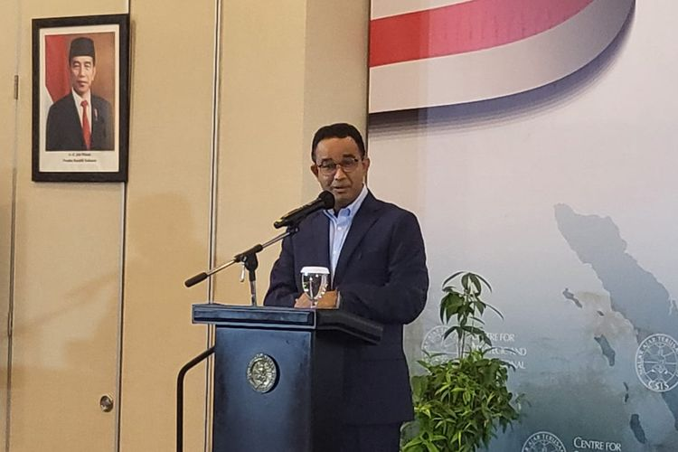

Sindir Politik Dinasti, Sekum Muhammadiyah: Ada yang Dapat Jabatan Modal Hubungan Darah
Sekretaris Umum Pimpinan Pusat (PP) Muhammadiyah Abdul Mu'ti menyinggung isu politik dinasti yang santer terdengar setelah putra sulung Presiden Joko Widodo (Jokowi), Gibran Rakabuming Raka mendaftar calon wakil presiden dengan sebuah kelakar. Baca Selengkapnya
Berita Lain


Sekretaris Tim Koordinasi Relawan Pemenangan Pilpres 2024 PDI-P (TKRPP PDI-P) Deddy Yevri Sitorus mengatakan, drama politik lebih banyak tercipta di lingkaran Presiden Joko Widodo. Deddy merespons ucapan Jokowi terkait situasi politik beberapa waktu belakangan yang banyak drama seperti sinetron. Baca Selengkapnya
Pengamat politik dari Universitas Paramadina Ahmad Khoirul Umam menyatakan, basis suara pasangan Ganjar Pranowo-Mahfud MD di Jawa Tengah bakal terpengaruh oleh mesin politik pasangan Prabowo Subianto-Gibran Rakabuming Raka. "Diakui atau tidak, agresivitas mesin-mesin politik Prabowo-Gibran itu akan berdampak pada basis dukungan suara Ganjar- mahfud di Jateng," kata Umam (6/11/2023). Baca Selengkapnya
Berita Hari Ini


Rekomendasi
Anies Ingin Indonesia Berperan Aktif dalam Politik Dunia, Sebut Selama Ini Hanya Fokus soal Transaksional
Bakal calon presiden (capres) Koalisi Perubahan Anies Baswedan menginginkan Indonesia berperan aktif dalam politik dunia. Menurutnya, bangsa Indonesia harus menyadari lebih dulu kedudukannya sebagai warga dunia. Sehingga, posisi politiknya di dunia internasional dipertimbangkan. Baca Selengkapnya